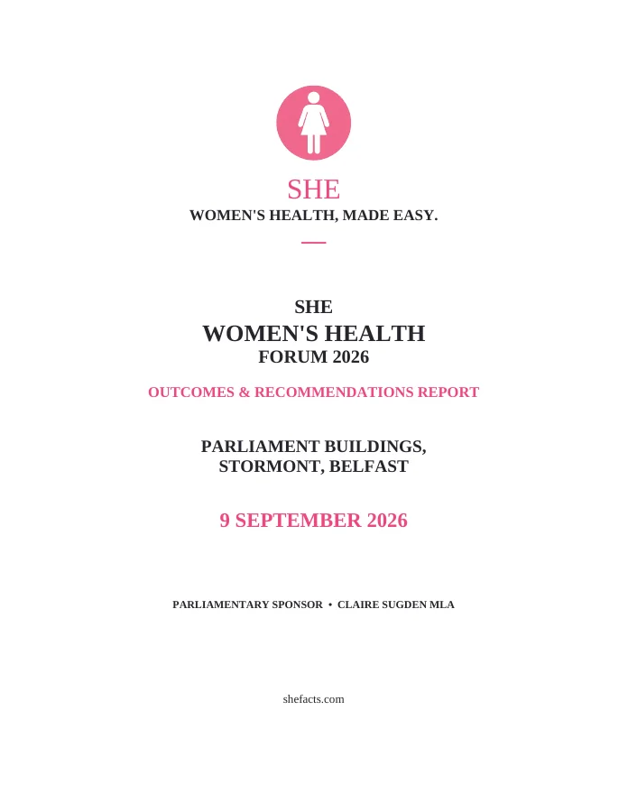

Insights & impact
Ideas that move beyond the room.
SHE’s published work brings together experiences, evidence and recommendations from women’s health conversations.

First published September 2026
SHE Women’s Health Forum 2026: Outcomes & Recommendations
Read the account of the Forum at Parliament Buildings, Stormont, and its 15 recommendations for a coordinated approach to women’s health in Northern Ireland.